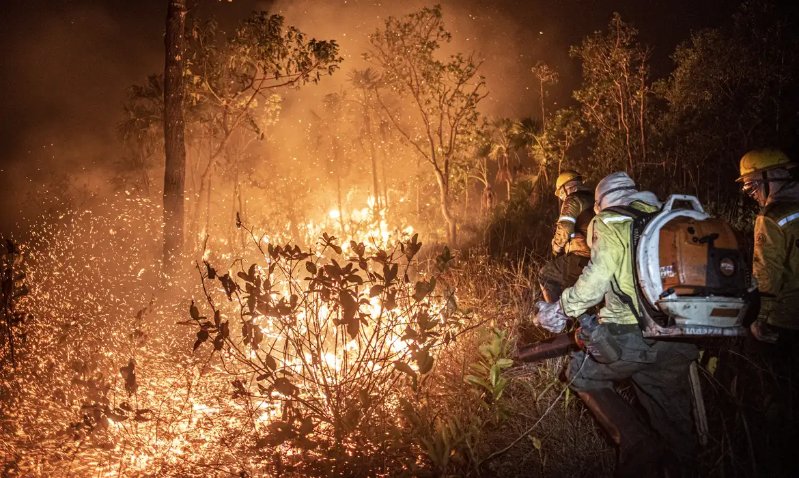

As queimadas são uma prática que consiste em incendiar terrenos, geralmente para limpeza do solo para plantação ou pecuária. Geram desmatamentos e podem queimar áreas verdes, biomas e até florestas inteiras, implicando na perda de biodiversidade e aumento de emissão dos gases de efeito estufa. O meio ambiente inclui o ar que respiramos, a água e os alimentos que consumimos, o solo sobre o qual estamos. Quando florestas e outras áreas verdes são queimadas, mesmo que fiquem a quilômetros de distância, liberam enormes quantidades de gases poluentes que afetam a saúde e podem contribuir para aquecer a Terra. Outros prejuízos consideráveis são em relação à doenças respiratórias e cardiovasculares, e mortes prematuras de pessoas vulnerabilizadas, como idosos, gestantes e crianças. De acordo com a Organização Mundial da Saúde (PMS), 93% de todas as crianças do planeta respiram ar que contém concentrações mais elevadas de poluentes do que aquelas consideradas seguras para a saúde humana. Por ano, 600 mil crianças morrem prematuramente por causa da poluição do ar. E, como se isso não bastasse, a exposição ao ar sujo também prejudica o desenvolvimento do cérebro, levando a deficiências cognitivas e motoras, e coloca as crianças em maior risco de doenças crônicas. Por isso, a mitigação do desmatamento e das queimadas é urgente para garantir a vida e a saúde de todos, especialmente das nossas crianças e adolescentes, que são mais vulneráveis aos impactos ambientais. Sabendo disso, o Instituto Alana tem participado de várias ações visando a proteção das presentes e futuras gerações. Em dezembro de 2018, para conscientizar sobre as consequências das mudanças climáticas e, inclusive, das queimadas e do desmatamento na Amazônia, lançamos o documentário O Amanhã é hoje – o drama de brasileiros impactados pelas mudanças climáticas, que foi lançado no Espaço Brasil da COP 24, a Conferência do Clima da ONU, realizada na Polônia. Também participamos, em novembro de 2020, como amicus curiae – que é quando pessoas ou organizações contribuem com seus conhecimentos para auxiliar decisões judiciais – da Arguição de Descumprimento de Preceito Fundamental (ADPF) nº 760, construída coletivamente com diversas organizações parceiras, pedindo que o Supremo Tribunal Federal (STF) determine à União e seus órgãos federais a imediata execução do PPCDAm, a política pública destinada ao combate e à redução do desmatamento no país. Encaminhamos, ainda, em fevereiro de 2021, denúncia ao Ministério Público Federal (MPF), contra a omissão do governo federal nas ações de combate às queimadas e ao desmatamento recordes em 2020. Citamos, por exemplo, o desfinanciamento das políticas públicas de combate ao fogo e uma banalização do tema ambiental, demonstrando que tais negligências representam uma violação aos direitos de crianças e adolescentes à saúde, à vida e ao meio ambiente equilibrado, como determina a Constituição Federal.
